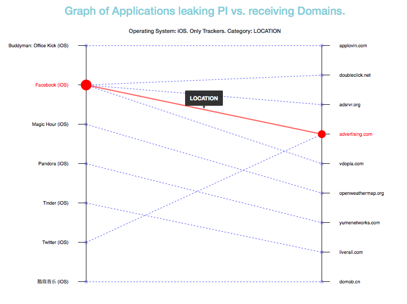

Recon is one of the projects that is supported by the DTL Grants program. It tries to provide users more transparency and control over the information about them that is sent by their mobile applications to Internet. Currently, users install lot of applications on their smartphones, but these devices give them no visibility into what information is being sent, and who is receiving it, Recon solves this problem by providing users an additional level of monitoring and control on which data is sent and who is receiving it.
Recon achieves this by analysing all the traffic that is sent by mobile devices and based on machine learning, it infers when privacy leaks occur based on contextual clues. This means that it detects when personal information is shared with other parties without users active involvement. The system has been trained with more than 1000 popular iOS and Android apps and it keeps learning continuously while people use it.
The system looks for three main different categories of information:
The system also divides the leakages into two main categories depending on whether the receiving party is a tracker or not. A tracker is a domain linked to companies that are known to track online activity of users at multiple domains so they can create profiles of the users. There are many public lists of trackers available, Recon has used the XXXX list to determine if a domain is a tracker or not. The reason for categorizing the receiving domains in these two categories (trackers/non-trackers) is because any leak that occurs to one of the tracker domains is more risky for end-users privacy, as trackers tend to accumulate different data from users and they can combine and exploit it in multiple ways.
We have developed a tool on top of the information gathered by Recon to make easier for anyone to understand which type of personal information is sent, which applications do it, and which are the domains that receive it. The tool allows to retrieve different types of insights, for the apps, domains and information that is leaked.
For instance, the following graph shows which iPhone Applications (from the ones analyised) are sending Location Information over the Internet to trackers.
In the graph, for instance, we can see how by using the Facebook application, your location information is sent to 4 different trackers. We can also see how some of these trackers (e.g. advertising.com) are not receiving only your location from Facebook but from other apps (e.g. Twitter in the example).
Some other example graphics can be found at the examples section.